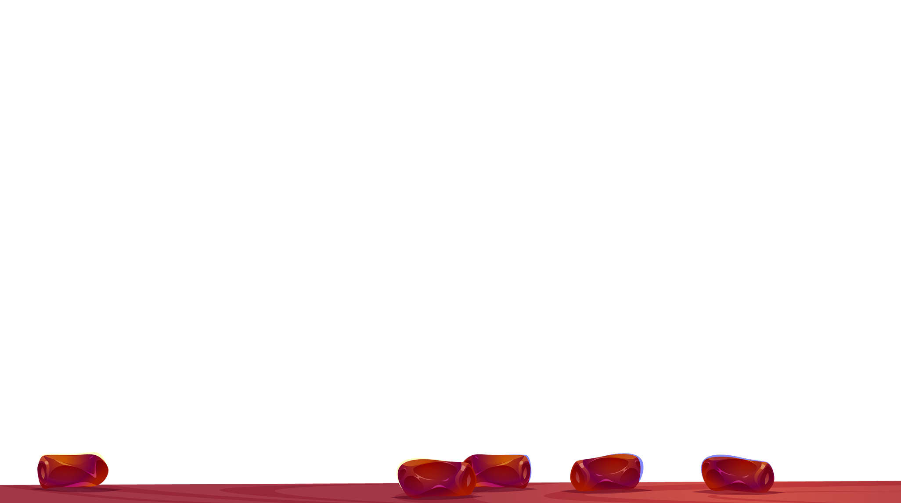
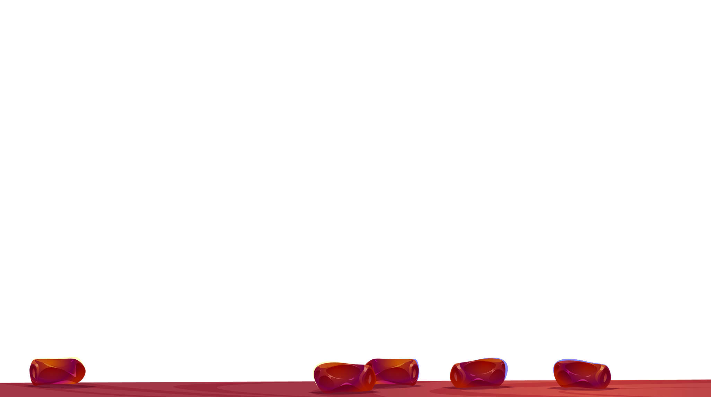
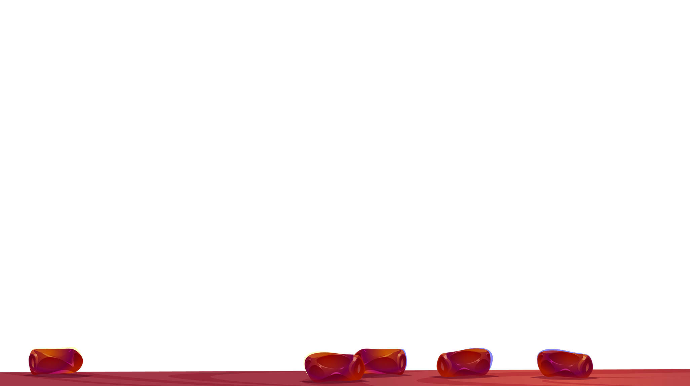
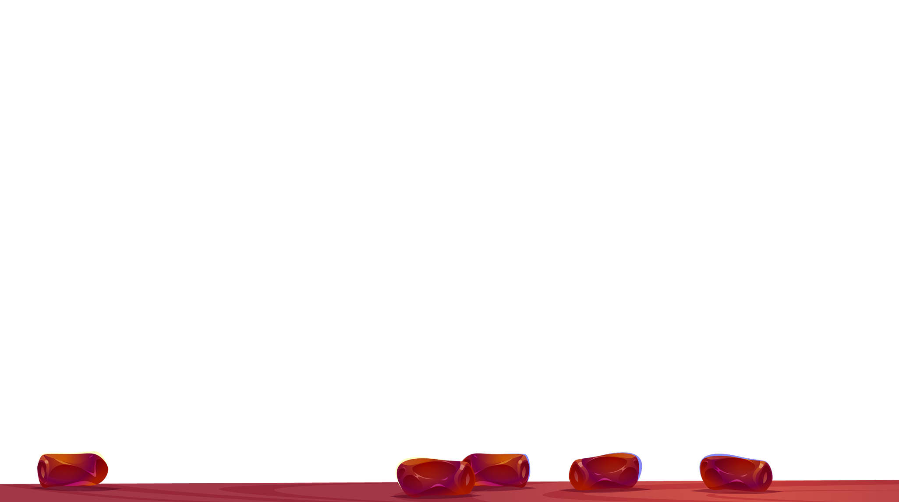

Eid Mubarak

 

 

Bakra Eid also known as Eid-ul-Adha is an important festival celebrated by Muslims across the world. Out of the two Eids, Eid al-Fitr and Eid-ul-Adha, which are celebrated by Muslims, Bakra Eid is said to be holier. It is celebrated on at the end of Hajj, a yearly pilgrimage to Mecca which Muslims are required to embark on once in their live.
Bakra Eid is also known as Sacrifice Feast as this day marks Prophet Ibrahim's devotion and faith in Allah. God had once asked Prophet Ibrahim to sacrifice the dearest thing to him to prove his love and faith, and so Prophet Ibrahim decided to sacrifice his only son. When Prophet Ibrahim was about to kill his son, God sent his angel Jibra'il (Gabriel) to replace the son with a goat. And so, since that day Bakra Eid is celebrated to remember Prophet Ibrahim's faith in God. The festival is celebrated by sacrificing a male goat; it is divided into three portions-- the first part is given to relatives, friends and neighbours; the second to the poor and needy; the third is for the family. Delicious dishes like mutton biryani and mutton korma, and desserts like kheer and sheer khurma are prepared on this day. Here are some Eid-ul-Adha wishes, quotes, messages, SMS that you can send to your near and dear ones or you can even post them up on Facebook or on WhatsApp as your status to share with all.
May this special day bring peace, happiness and prosperity to everyone. Eid Mubarak! May Allah flood your life with happiness on this occasion, your heart with love, your mind with wisdom. Wishing you a very Happy Eid.
The holy month of Ramadan is just about to end and the of Eid festival is just about to begin. Eid ul Fitr is an important religious day and Muslim all around the world celebrate this festival with fervour and enthusiasm.
It is a tradition amongst Muslims to convey Eid Mubarak Greetings and Blessings to their loved ones, family members and friends.
Here are some top Eid Mubarak Wishes, Eid Greetings with Happy Eid Mubarak Images which you can share with your friends and family members on this joyful day.